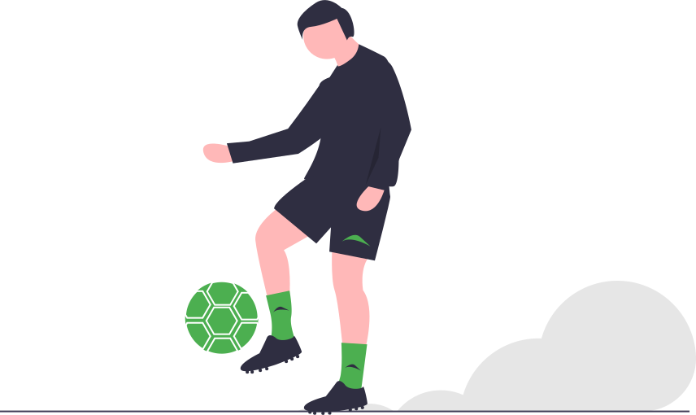
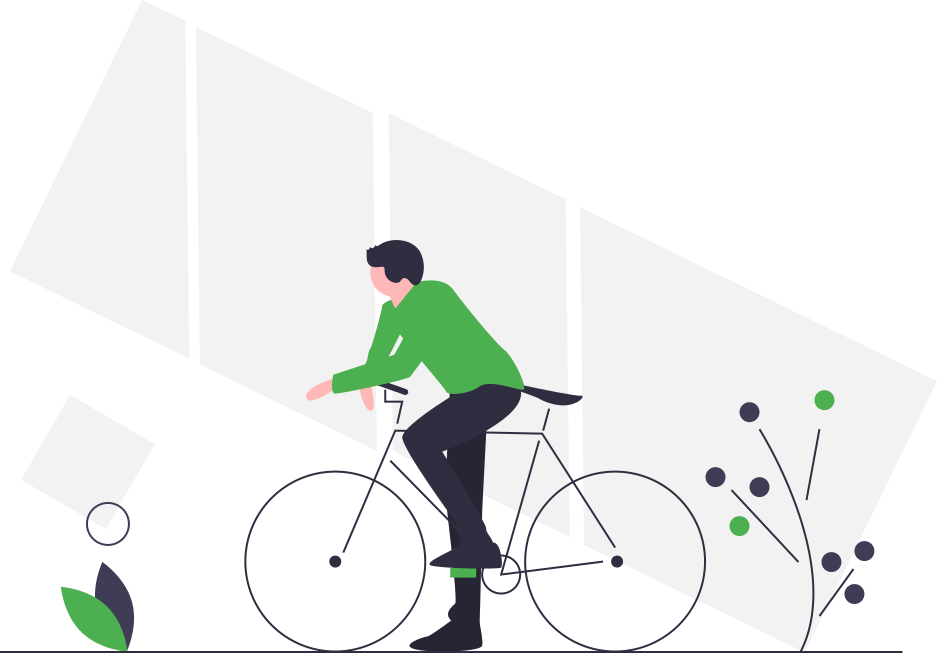
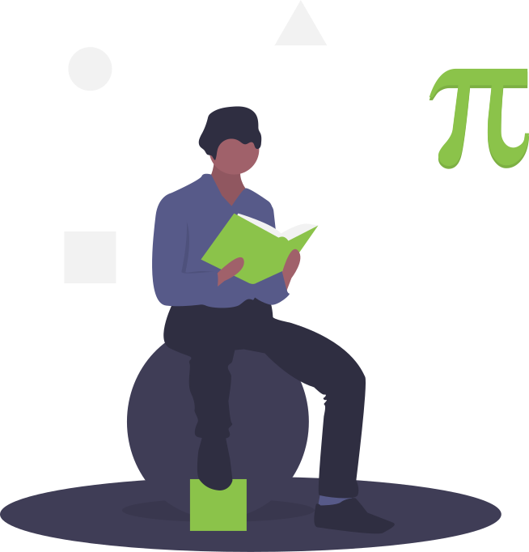
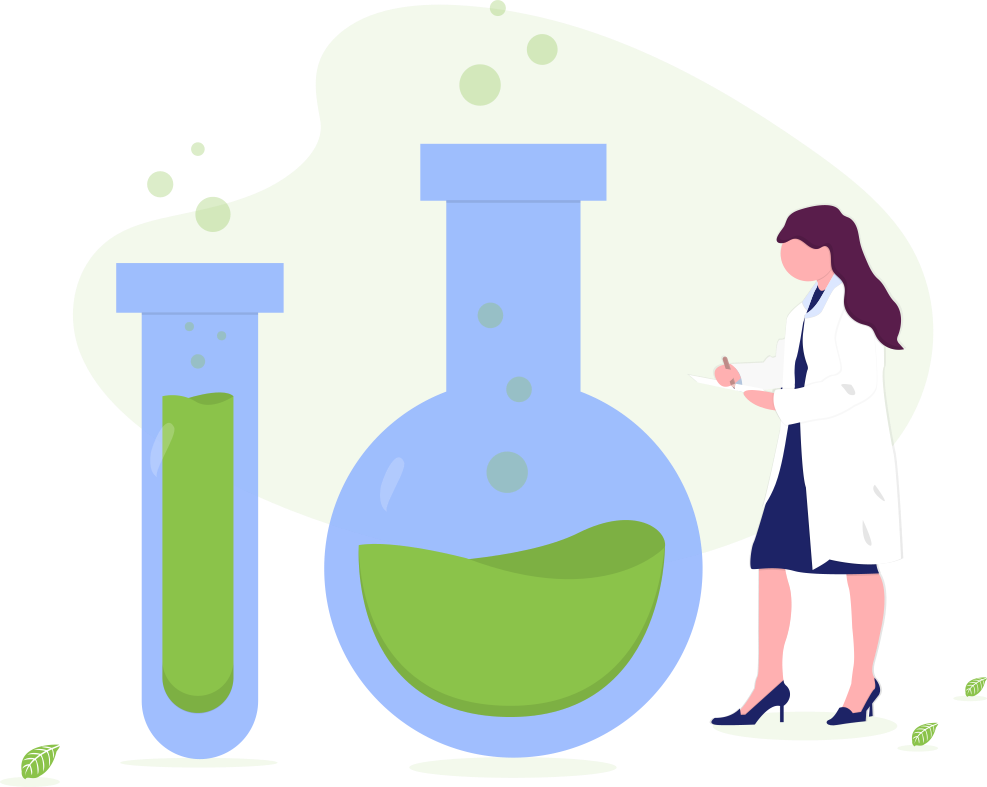
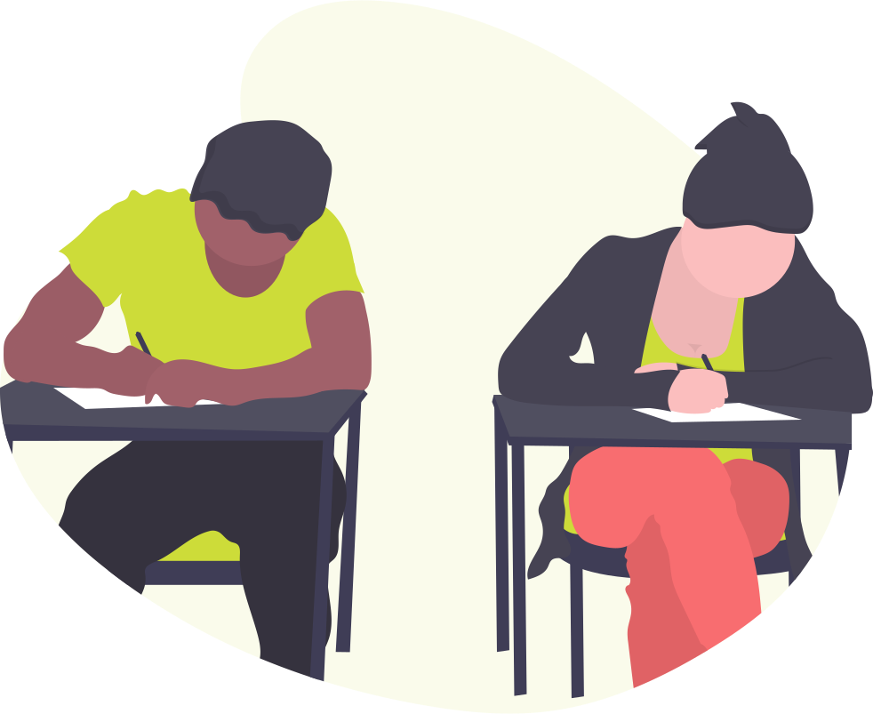

I am 15 years old.
I study at Fr. Agnel School, New Delhi.
Currently I am in 10th class.
I like to-
 Play football Read books  Ride bicycle Make websitesEvery subject in school is unique and interesting in its own way. Although every subject holds equal importance for me, but when it comes to favourite subjects. I like-
 Mathematics  Science FrenchMy aim is to become a software engineer; for that to happen, I need science in 11th standard so, this session becomes very imporantant for me. Also, programming has to be on my finger tips in order to excel in my career. I hope that I get good grades in my Boards. I also like building apps, so that is also what I am interested in.
Programming  Boards class 10